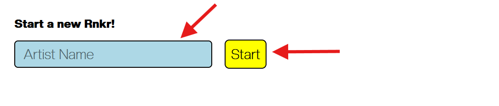
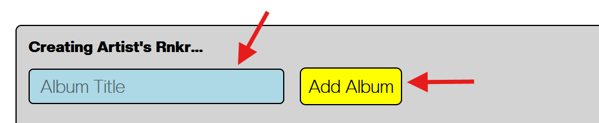
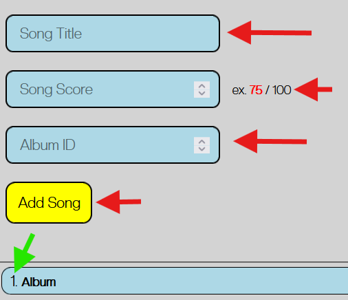
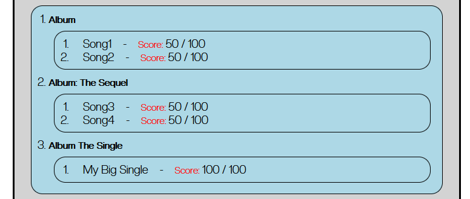
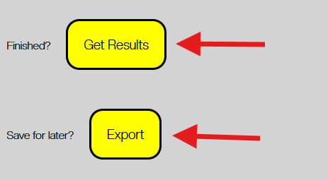
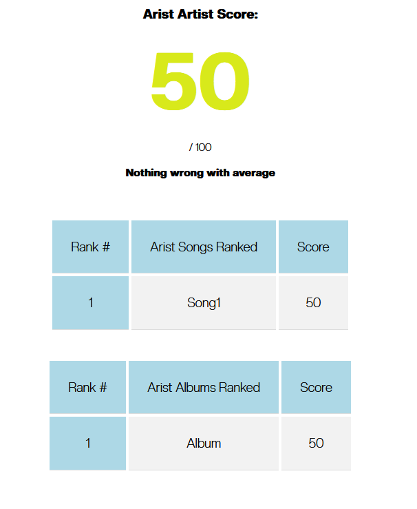
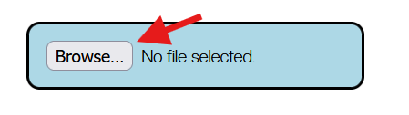

Why TunesRnkr?
Most of us enjoy music, to some degree.
Most of us also have a favourite artist that we listen to on repeat all the time.
This web app is a tool to help you, really discover your true feelings of an artists
discogrpahy.
(For the nerds: ) This web app was coded with only vanilla HTML, CSS, and JavaScript!
The focus of this app was to create an easy to find, easy to use application,
that has no backend.
Users are able to do it the old fashioned way with a physical text file that is exported when
you want to "save". This way, you don't have to review all of the songs at once,
and can come back to this application later. This is especially useful if an artist releases a new
album. This way you can come back and see how it affects your Rnkr on that artist.
See how to use the app a bit more below...
Rnk every song.
Rnk every album.
Rnk the artist.
1.
Type in the artist you are going to Rnk. Then click "Start".
2.

Type in an album you are going to Rnk. Then click "Add Album".
3.
Type in the song title, your score of the song, and the album ID. Then click "Add Song".

Above, is an example of what you could expect after adding some songs and albums...
4.

Once you are done adding your albums and songs, you can either Get Results or Export.
Getting Results...
Would give you something similar to the example above.
Exporting...

Will download a txt file, that can be found in your Downloads folder on your device.
If you scroll back to the top of the page...

By clicking the "Browse" button, you will be able to import the previously exported txt file.
This allows you to save your Rnkr, and work on it later if you please.
5.
Have Fun Rnking <3
Go Rnk